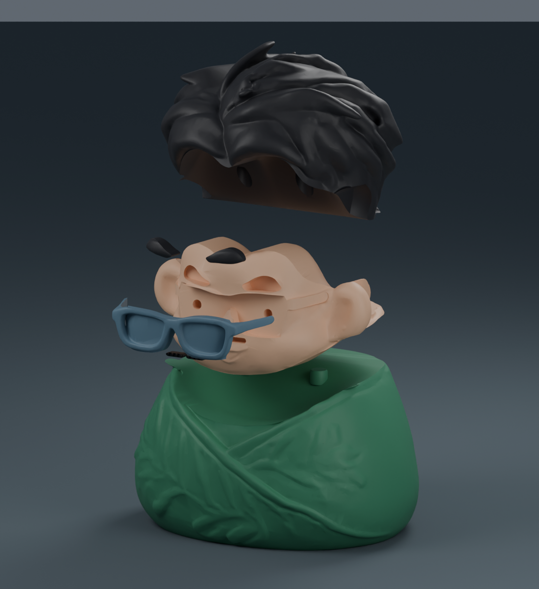
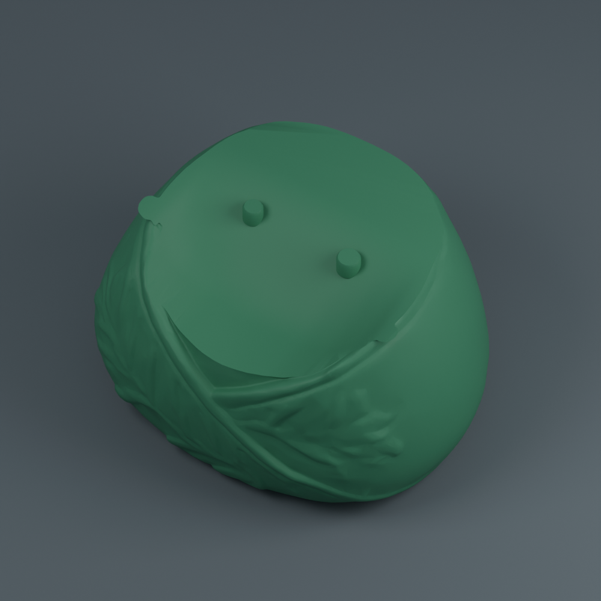
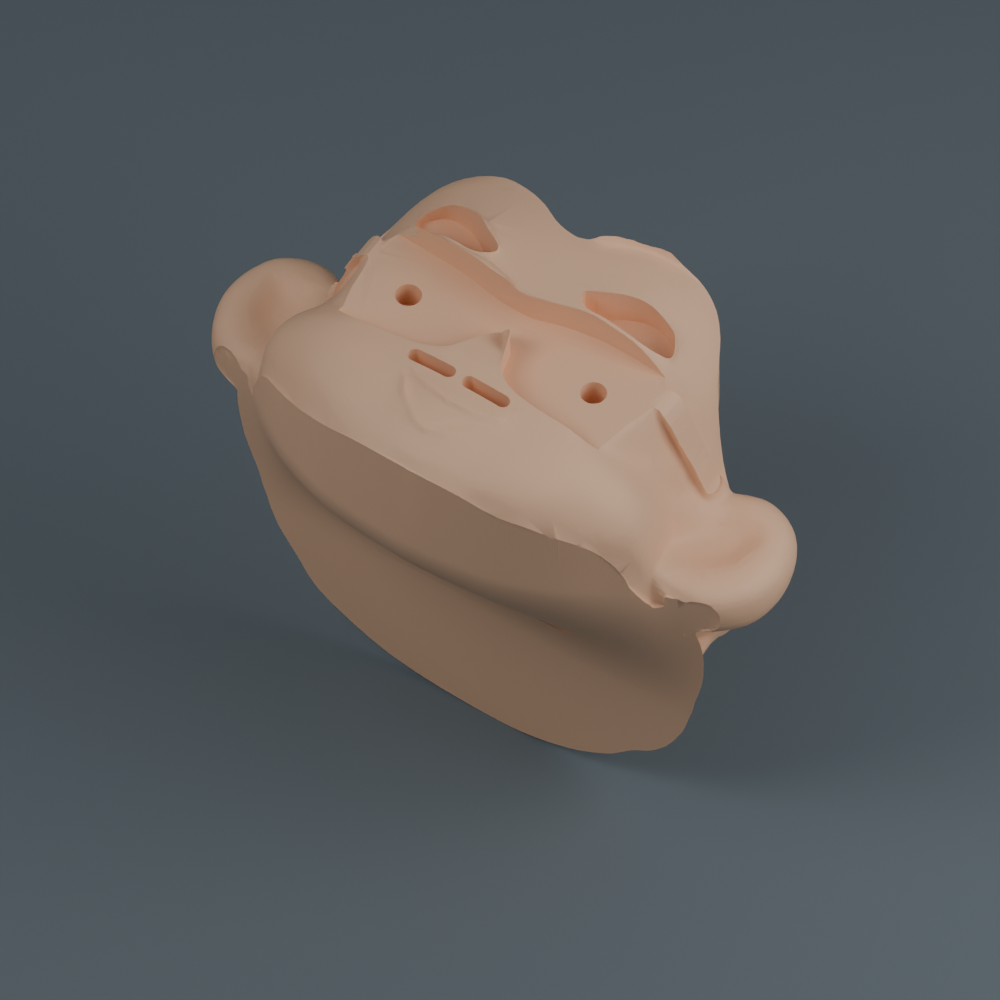
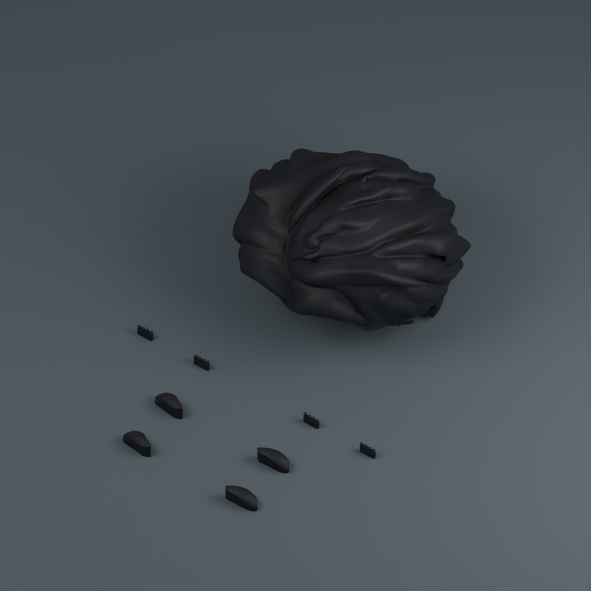
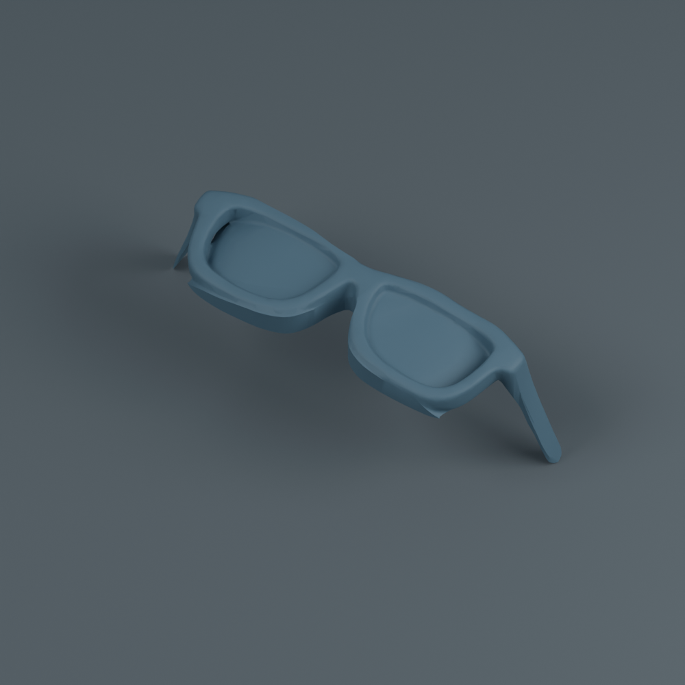
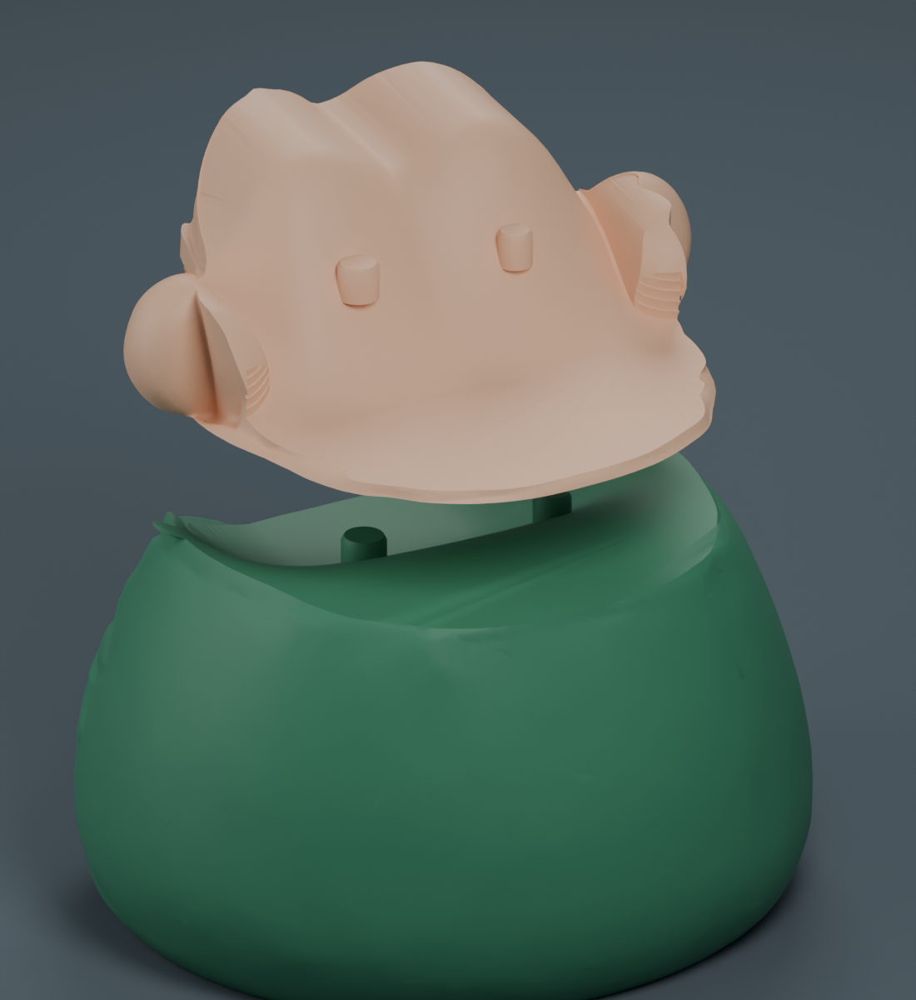

ZONGZI FIGURINE · ASSEMBLY EDITION
分開印，再把可愛組起來。
可愛陳晉的 10 公分組裝版本。粽葉、臉、頭髮和眼鏡各印一張單色盤，再用定位榫與少量膠固定；每盤都能選自己喜歡的線材顏色。
8 小時 46 分四盤切片總預估
約 125 g含支撐與五官備品
4 張單色盤列印中途無換色、無擦料塔
估計採 X1 Carbon／0.4 mm／PLA／0.16 mm。另計取件、換盤、清理支撐與組裝時間；尚未實體試印。
 完成外觀 · 約 10 公分高
完成外觀 · 約 10 公分高
八件成品 · 四個主件、兩片眉毛、兩片小鬍子每次開啟一盤，使用一種線材列印
3MF 已保存擺放方向、底邊及支撐設定。以「專案」開啟，在 Bambu Studio 選擇這一盤的線材；換機型或線材後請重新切片。沒有 AMS 也能分盤印製。

01 粽葉
約 3 小時 22 分 · 57.85 g · 建議綠色
下載粽葉 3MF

02 臉與耳朵
約 1 小時 53 分 · 23.87 g · 建議膚色
下載臉部 3MF

03 頭髮、眉毛與小鬍子
約 3 小時 5 分 · 40.07 g · 建議黑色
眉毛與小鬍子各附一組備品，這盤共 9 個物件。
下載頭髮與五官 3MF

04 眼鏡
約 25 分 · 2.79 g · 自選顏色
下載眼鏡 3MF
上圖顯示實際零件與擺放方向，未顯示自動支撐。切片總耗材已包含支撐與底邊。小鬍子的四個圓點連在細底條上，只需安裝左右兩片。
組裝順序
- 冷卻後拆除支撐與底邊，清乾淨榫孔內的殘料。
- 臉裝到粽葉上：對準粽葉的兩根定位榫，由上向下放入。
- 頭髮裝到臉上：對準臉背面兩根定位榫，由上向下放入。
- 裝小鬍子與眉毛：由正面放入對應凹槽。圖左、圖右以正面觀看為準。
- 裝眼鏡：把鏡背的兩根小榫對準臉上的孔，從正面推入。
- 整套試裝順暢後，拆開於接點少量點膠，再依相同順序固定。
定位榫的位置（背面視角）

下方綠色榫接臉，上方膚色榫接頭髮。主接點的兩根榫直徑不同，可協助辨別方向。
配合間隙與列印設定
榫孔單邊留 0.25 mm 間隙，接合面也留有縫隙；實際鬆緊仍受印表機與線材影響。請先印試配件，必要時輕磨毛刺，再點膠固定。
層高為 0.16 mm，比原四色版的 0.12 mm 層紋稍明顯。可改回 0.12 mm 後重新切片。範例沿用 PLA／紋理 PEI 55°C，切片器保留床溫提示 1000C001；請採用自己機型與線材的設定。